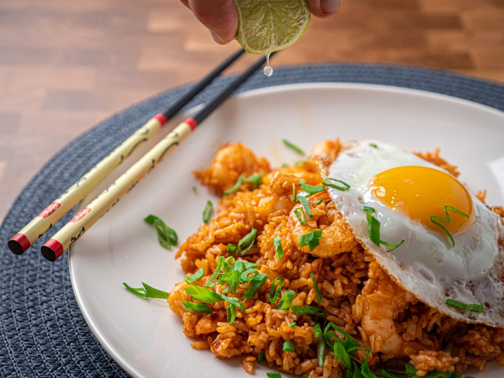

Nasi Goreng

Nasi Goreng, the national dish of Indonesia, translates as "fried rice" is the most popular dish in Indonesia traditionally served with a fried egg
It's ready in minutes, cooks in one pan and the perfect use for day-old rice. Bursting with sweet and savory flavors, this Indonesian fried rice is sure to be a dinner hit! Nasi goreng is easy to prep yet big on flavor!
Ingredients
- 400g rice(cooked)/li>
- 1 onion, sliced
- 2 cloves garlic
- 2 eggs
- 3 stalks scallions
- 1 tbsp cooking oil
- 3 tbsp sweet soy sauce
- 1 tbsp soy sauce
- salt
optional
- carrots
- peas
- chicken
- chili
- anything you just want to add basically
Steps
- Finely chop onion and garlic. also all the optional ingredients aswell if you have any
- In a wok, heat oil on high heat. Add garlic and onion (and the optional veggies). Sauté for approx.2-3 min
- Push the veggies to the edge of the wok so that a well is formed. Add cooked rice in the middle, fry briefly. Then mix everything together and continue frying, until the rice becomes crispy. Next, add sweet soy sauce and soy sauce, continue frying the rice for approx. 5min., until the sauce caramelizes
- Heat cooking oil in a frying pan over medium heat. Crack in the eggs and season eggs with salt to taste. Continue frying until whites crips on the edges and yolk is just set but runny in the center, or according to your preference. Serve the fried rice with eggs on top and garnish with remaining scallion greens. Enjoy!